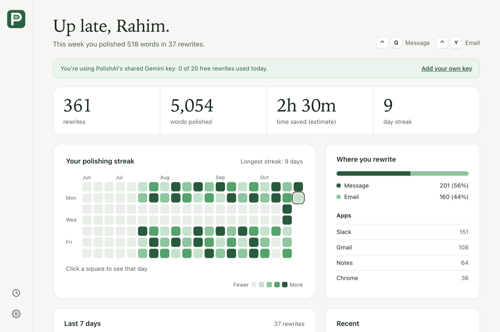
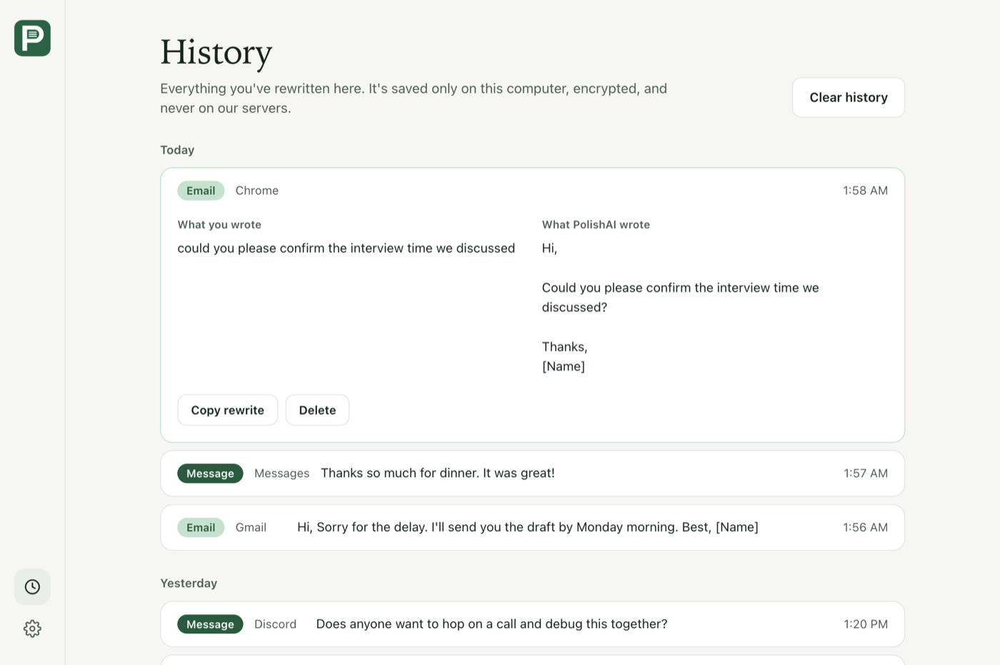
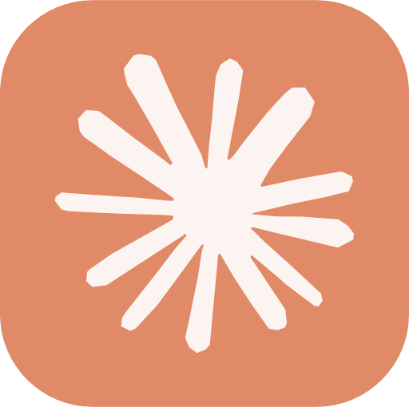

Write it fast. Send it right.
Highlight text in any Mac app, press a shortcut, and PolishAI rewrites it in place as a clear message or a polished email.
Free to start. Needs macOS 13 or newer. Not on Windows yet.
Problem: sounding better takes four steps.
Here is what most people do today, every time they want a message or email reworded.
Solution: Highlight. Press. Done.
PolishAI works right where you type, in every app. There's no window to open and nothing to paste.
-
pls confirm the interview time we talked about asap1
Highlight
Select what you wrote, in any app or web page.
-
pls confirm the interview time we talked about asap⌃ ControlYPolishing2
Press a shortcut
Q for a message, Y for an email. Change both in Settings.
-
Hi,
Please confirm the interview time we discussed as soon as possible.
Best,
[Name]Polished3It's replaced
The rewrite lands where your words were. Your clipboard is put back.
A message or an email. You pick.
Two shortcuts, two styles. Here's what each one does to the same kind of sentence.
Hey, can you send me that report by Friday? Thanks.
Short and natural. Fixes typos, slang and wording.Hi, Could you please send me the report by Friday? Thanks, [Name]
Reworded to sound professional, with a greeting and sign-off.Watch the habit build.
Every rewrite fills in a square. Open PolishAI to see your streak, your totals and where you write most.

Your totals
Rewrites, words polished and time saved, at a glance.
Your streak
A calendar of every day you wrote. Click a square to see that day.
Your apps
See whether it's Slack, Gmail or Notes where you polish the most.
Your words stay on your Mac.
History shows what you wrote next to the rewrite. Copy one again, delete one, or clear it all.
- On your Mac
- What you wrote, what PolishAI wrote, and the app. Saved in an encrypted file only you can open.
- On our servers
- Counts and dates for your stats. Never your words.

20 free rewrites every day.
On us. No card, no subscription. The count starts over each morning.


Want more? Bring your own key.
Save your own API key in Settings and write as much as you like. Switch back to the free 20 any time.
Questions, answered.
What people ask before they download.
Does it work on Windows?
Not yet. PolishAI is Mac only, on macOS 13 or newer, for both Apple Silicon and Intel.
Why does my Mac show a warning?
PolishAI isn't signed by Apple yet, so macOS asks you to approve it once. Open System Settings, Privacy & Security, and click Open Anyway. The download window shows the steps.
What permission does it need?
Accessibility, so it can press Copy and Paste for you. It doesn't read your screen, and it only acts when you press your shortcut.
Which download do I need?
Open the Apple menu and choose About This Mac. "Chip: Apple M…" means Apple Silicon. "Processor: Intel…" means Intel. Not sure? The form gives you both.
Does it work in my browser?
Yes. It works in Chrome, Safari and any app where you can select text and use Copy and Paste, including Gmail and LinkedIn.
What if I run out of free rewrites?
Wait until tomorrow, or save your own key from Gemini, OpenAI or Anthropic in Settings. You can switch back any time.